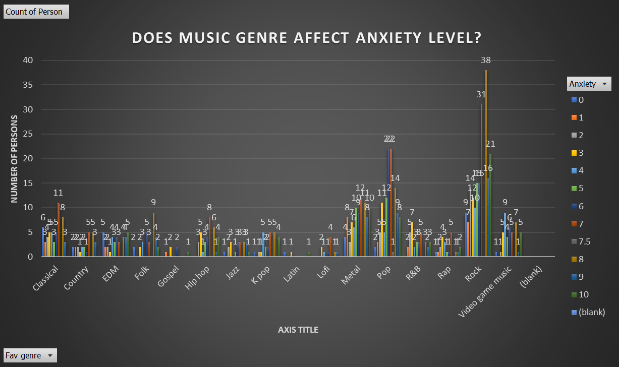
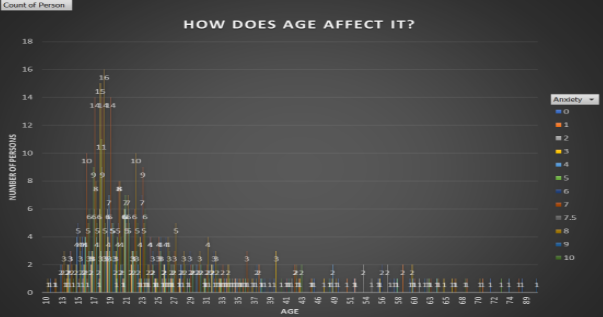

CONCLUSION
Based on the summary of statistics presented above, we can observe that 26%
of the respondents’ favorite genre is rock. 188 out of 736 respondents like this genre. In contrast,
only 3 out of 736 respondents like Latin music. If we observe the anxiety levels of the respondents,
17% of them fall under anxiety level 7 and only one person falls under anxiety level 7.5. But how exactly does
music affect an individual? Based on the data that we have obtained; we can observe that anxiety levels are much higher among individuals
that listen to rock. Age can also play a part in an individual’s anxiety levels,
here we can observe that individuals are most likely to have a high anxiety level if they are in their late teens.
Studies show that music can impact our mood long-term,
increasing depression or anxiety. Certain songs, lyrics, or genres of
music are more likely to intensify these feelings. It is possible that if
we listen to songs that have intense emotion, it may trigger anxiety. If an individual finds themselves
to be more anxious and less relaxed, it may be because of the genre of music that they listen to.
It would be recommended to try a different genre of music and see how it affects them.
Certain genres of music, such as classical, soft pop, and certain types of world music contain the musical
elements that are necessary to help a person relax. According to ASCAP, listening to music can help calm y
our nervous system and lower cortisol levels, both of which can help reduce stress. Music can be a form of
emotional release, it can be a way for an individual to express themselves and let their feelings out.
In this way, music can help an individual’s anxiety, but it can also make it worse.

